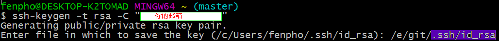

Windows中从GitHub上面：地址 下载安装好git后（双击，改一下需要的安装路径，一路确定就好了），安装过程可以参考廖雪峰的Git教程。默认的HOME和~路径一般都是C:\Users\用户名，每次得用命令切换到常用的Repository下，此操作重复而没有意义。更重要的是，若使用SSH连接GitHub，其配置文件比如.ssh也保存在C盘中，不利于备份。打开Git安装位置\etc\profile文件，找到：1# normalize HOME to unix pathHOME="$(cd "$HOME" ; pwd)"export PATH="$HOME/bin:$PATH"
增加两行，修改后结果如下（如果没有则在末尾插入新的内容）：1# normalize HOME to unix pathHOME="你想要修改的HOME路径"HOME="$(cd "$HOME" ; pwd)"cdexport PATH="$HOME/bin:$PATH"
重启Git bash，就会自动进入新修改后的HOME路径了。
为了方便起见可以顺手加上一个变量名用于自定义项目目录，此做法不但便于路径跳转，也可以在启动git时自动进入项目目录。方法极为简单，只需在profile文件中加入:1# set Project Path proj="你的项目文件目录" cd $proj
运行下面的指令：1$ ssh-keygen -t rsa -C "xxx@xxx.com"
即可看到下图：

紫色部分要一模一样，前面的为自定义的路径，要与你设置的HOME路径相同，这样就能够自定义你的SSH公钥和私钥的保存位置了。